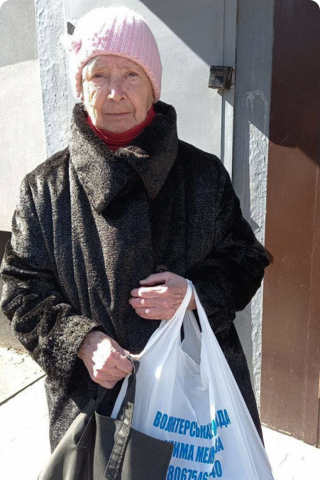

<section class="section what">
    <div class="container">
        <h2 class="what__title">What We Do</h2>
        <div class="what__wrapper">
            <picture class="picture">
                <source
                        media="(min-width: 992px)"
                        srcset="../img/what-desck.jpg, ../img/what-desck@2x.jpg 2x"
                />
                
            </picture>
            <ul class="what__list">
                <li class="what__item">
                <span class="what__number">
                    01
                </span>
                    <h3 class="what__subtitle">We deliver humanitarian aid
                        to Kharkiv</h3>
                    <p class="what__text">Not enough humanitarian aid reaches the city. We have two trucks and we
                        deliver
                        humanitarian aid from Lviv and Poltava. We also buy food, medical supplies, and other
                        necessities.</p>
                </li>

                <li class="what__item">
                <span class="what__number">
                    02
                </span>
                    <h3 class="what__subtitle">We distribute food directly to homes and bomb shelters</h3>
                    <p class="what__text">Our service area includes Saltivka and surrounding neighborhoods in NE
                        Kharkiv. There are many elderly, disabled, and scared people who cannot leave their apartments,
                        homes, basements, or other hide-outs. At the moment, we feed around 5,000 people including 700
                        immobile persons.</p>
                </li>

                <li class="what__item">
                <span class="what__number what__number--mod">
                    03
                </span>
                    <h3 class="what__subtitle">We help with medical aid and local evacuation </h3>
                    <p class="what__text">Our neighborhood hospitals, medical offices and pharmacies are closed due to
                        non-stop shelling and bombings. There is no public transportation. We drive people from these
                        areas to the open hospitals in other parts of the city, and to the Main Railroad Station for
                        evacuation.</p>
                </li>

                <li class="what__item">
                <span class="what__number what__number--mod">
                    04
                </span>
                    <h3 class="what__subtitle">We deliver humanitarian aid
                        to Kharkiv</h3>
                    <p class="what__text">Not enough humanitarian aid reaches the city. We have two trucks and we
                        deliver
                        humanitarian aid from Lviv and Poltava. We also buy food, medical supplies, and other
                        necessities.</p>
                </li>
            </ul>
        </div>
    </div>
</section>